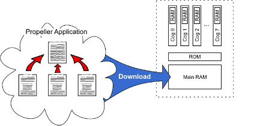
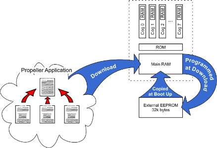

Before we explain the code, let’s take a closer look at the downloading process.
Since our code was downloaded to RAM only, power cycling or resetting the Propeller would cause RAM contents to be lost and the program to stop permanently.

What if we don't want it turned off permanently, after reset or power-off? We could download to EEPROM instead of just RAM.

As you may see from the above figure, the last step actually downloaded to RAM first, then the Propeller chip programmed its external EEPROM, then started running the application from RAM, blinking the LED on I/O pin 16.
You probably noticed that the “Propeller Communication” dialog stayed on the screen much longer than last time; EEPROMs take much longer to program than RAMs do.
Upon waking up from reset, the Propeller chip performed the boot-up procedure. During that procedure, it determined it needed to boot up from the external EEPROM and then it took approximately 1½ seconds to completely copy the 32 Kbytes of content into its RAM and start running it.
Downloading only to RAM is convenient for development sessions because it is much faster. Downloading to both RAM and EEPROM to make the application more permanent is best done only when necessary because of the extra download time required.
Caution! If you download to EEPROM one or more times then revise your program and download to RAM only, when manually reset, the Propeller will boot up with your old program. This may make sense now, but that result can be very confusing when you're not paying attention. If things don't work right after a reset occurs, suspect the program in EEPROM first.
Propeller Help Version 1.2
Copyright © Parallax Inc., dba Parallax Semiconductor
6/17/2011